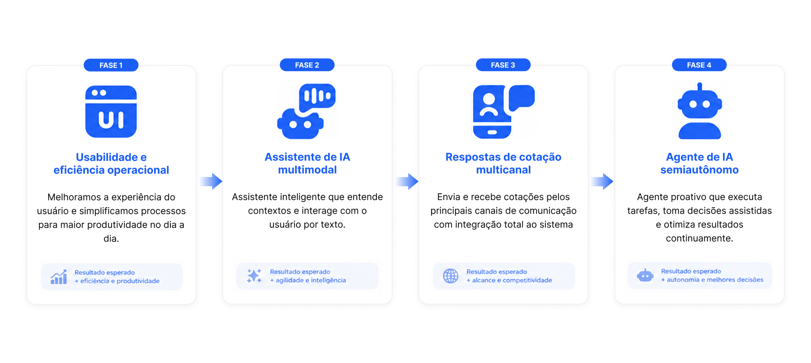
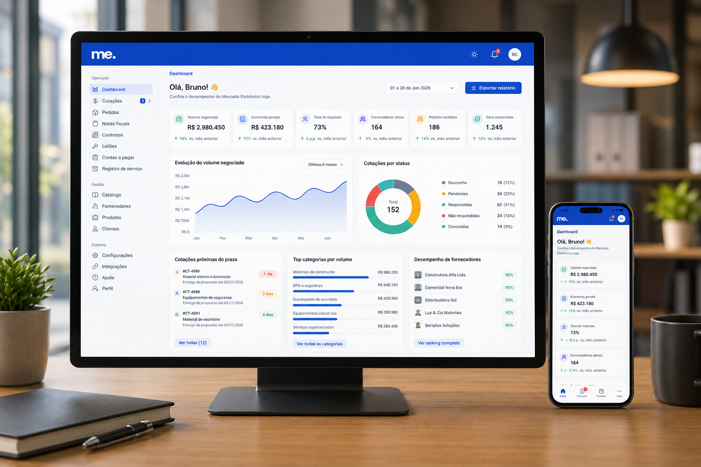

Desafio
Processo de resposta de cotação fragmentado com baixa aderência por parte dos fornecedores para responder através da plataforma, resultando no aumento de trabalho para os compradores.
Melhoria da Resposta de Cotação
Descoberta, análise e concepção de soluções para transformar a resposta de cotações entre compradores e fornecedores.
Resumo executivo
O projeto teve como objetivo identificar fricções e oportunidades na Jornada da Resposta de cotações do Mercado Eletrônico, envolvendo compradores e fornecedores. Através entrevistas, análise heurística e benchmark, mapeamos dores críticas e desenhamos soluções inovadoras que combinam tecnologia, automação e IA para melhorar a experiência e aumentar a eficiência do processo.
Processo de resposta de cotação fragmentado com baixa aderência por parte dos fornecedores para responder através da plataforma, resultando no aumento de trabalho para os compradores.
Redesenho da experiência com novos fluxos, automação, IA e resposta multicanais (e-mail e WhatsApp), centralizando informações e facilitando a tomada de decisão.
Mais cotações respondidas, redução do tempo de resposta, maior competitividade entre os fornecedores e melhores decisões para compradores.
Metodologia centrada no usuário, combinando análise heurística, entrevistas, benchmarking e ideação colaborativa com o time do ME.
Metodologia
Abordagem estruturada para entender, analisar e gerar soluções de alto impacto.
Análise detalhada das principais telas do sistema atual identificando os problemas de usabilidade inconsistências e oportunidades de melhoria.
Conversas com colaboradores para entender suas dores e necessidades com relação ao sistema.
Entrevistas com Compradores e Fornecedores para entender suas dores e necessidades com relação ao sistema.
Análise das jornadas dos usuários para entender os pontos de fricção do sistema.
Com base nas dores e oportunidades mapeadas, fiz o redesign do módulo de resposta de cotação.
Superamos as expectavivas, não apenas melhorando a interface, mas também adicionando novas funcionalidades que contribuem para a evolução da features de resposta de cotação. O roadmap foi dividido em três etapas:

Big Numbers AS IS
Dedicadas ao planejamento, execução e entrega do projeto.
Para entendimento das dores e necessidades.
Para entendimento das dores e necessidades.
Durante as entrevistas.
Mapeados durante a análise heurística.
A proposta transforma a tela de cotação em uma plataforma inteligente, personalizada e orientada à performance. As oportunidades passam a ser segmentadas conforme o perfil do fornecedor, enquanto o sistema aprende continuamente com as respostas enviadas, sugerindo preços, condições comerciais e preenchimento automático com apoio de Inteligência Artificial. O resultado é uma experiência mais ágil, competitiva e eficiente para compradores e fornecedores.
